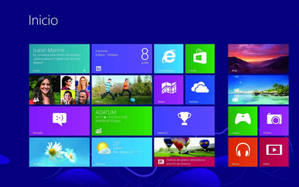

sistemas operativo
¿Que son los sistemas operativos?
Un sistema operativo puede ser definido como un cojunto de programas especialmente hechos para la ejecucion de varias tareas, de las que sirve en intermedio entre el usuario y la computadora.Este conjunto de programas que manejan el hardware de una computadora u otro dispositivo electronico. Un sistema operativo, tiene tambien como funcion, administrar todos los perifericos de una computadora. Es el encargado de mantener la integridad del sistema.
El sistema operativo tambien hace una administracion de recursos de la computadora, para evitar que los programas entren en conflico.El sistema operativo funcionna como un "maestro", procurando que todos losprogramas y todos los componentes de la computadora funcionen de forma armonica.

Funciones basicas del sistema operativo
El sistema operativo es un conjunto de programas que: